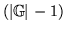

- ... weight1.1
- often
referred to as a codebook exponent.
- ... probability1.2
-
Since the output distributions are densities, these are not
really probabilities but it is a convenient fiction.
- ... non-emitting1.3
-
To understand equations involving a non-emitting state at time
 , the time
should be thought of as being
if it is an entry state, and
, the time
should be thought of as being
if it is an entry state, and
 if it is an exit state. This becomes important when HMMs are connected together
in sequence so that transitions across non-emitting states take place
between frames.
if it is an exit state. This becomes important when HMMs are connected together
in sequence so that transitions across non-emitting states take place
between frames.
- ...accumulators1.4
-
Note that normally the summations in
the denominators of the re-estimation formulae are identical
across the parameter sets of a given state and therefore
only a single common storage location for the denominators
is required and it need only be calculated once. However,
HTK supports a generalised parameter tying mechanism
which can result in the denominator summations being
different. Hence, in HTK the denominator summations
are always stored and calculated individually
for each distinct parameter vector or matrix.
- ... operation1.5
-
They can even be avoided altogether by using a flat start
as described in section 8.3.
- ... minor1.6
-
In practice, a good deal of extra work is needed to achieve
efficient operation on large training databases. For example,
the HEREST tool includes facilities for
pruning on both the forward and backward passes and
parallel operation on a network of machines.
- ... Model1.7
-
See ``Token Passing: a Conceptual Model for Connected Speech
Recognition Systems'', SJ Young, NH Russell and JHS Thornton,
CUED Technical Report F_INFENG/TR38, Cambridge University, 1989.
Available by anonymous ftp from svr-ftp.eng.cam.ac.uk.
- ... dependent3.1
- The final stage of the tutorial deals
with adapting the speaker dependent models for new speakers
- ...
used3.2
- Available by anonymous ftp from
svr-ftp.eng.cam.ac.uk/pub/comp.speech/dictionaries/beep.tar.gz.
Note that items beginning with unmatched quotes, found at the start
of the dictionary, should be removed.
- ... files3.3
-
Not to be confused with files containing edit scripts
- ... arguments3.4
-
Most UNIX shells, especially the C shell, only allow a limited and
quite small number of arguments.
- ...
together3.5
-
Note that if the transition matrices had not been tied, the CO
command would be ineffective since all models would be different by
virtue of their unique transition matrices.
- ... file3.6
- The HLED tool may have to be used to insert silences
at the start and end of each transcription or alternatively
HRESULTS can be used to ignore silences (or any other symbols) using
the -e option
- ...
is4.1
- All of the examples in this book assume the
UNIX Operating System and the C Shell but the principles apply to
any OS which supports hierarchical files and command line arguments
- ... element)4.2
- Block sizes typically grow as
more blocks are allocated
- ... retries4.3
- This does not work if input filters are used.
- ... units5.1
-
The somewhat bizarre choice of 100nsec units originated in Version 1 of
HTK when times were represented by integers and this unit was the best
compromise between precision and range. Times are now represented by
doubles and hence the constraints no longer apply. However, the need for backwards
compatibility means that 100nsec units have been retained. The names
SOURCERATE and TARGETRATE are also non-ideal,
SOURCEPERIOD and TARGETPERIOD would be better.
- ...
input5.2
- This method of applying a zero mean is different to
HTK Version 1.5 where the mean was calculated and subtracted from the
whole speech file in one operation. The configuration variable
V1COMPAT can be set to revert to this older behaviour.
- ... databases5.3
- Many of the
more recent speech databases use compression. In these cases, the data may be
regarded as being logically encoded as a sequence of 2-byte integers even if
the actual storage uses a variable length encoding scheme.
- ... function5.4
-
Note that some textbooks define the denominator of equation 5.4
as
so that the filter coefficients are the
negatives of those computed by HTK.
- ... root.5.5
- the degree of
compression can be controlled by setting the configuration parameter
COMPRESSFACT which
is the power to which the amplitudes are raised and defaults to
0.33)
- ... parameterisation5.6
- In any
event, setting the compatibility variable V1COMPAT to true in
HPARM will ensure that the calculation of energy is compatible with
that computed by the Version 1 tool HCODE.
- ...#tex2html_wrap_inline49093#�5.7
- Unless V1COMPAT is
set to true.
- ... discarded5.8
-
Some applications may require the 0'th order cepstral coefficient
in order to recover the filterbank coefficients from the cepstral
coefficients.
- ... letters6.1
-
Some command names have single
letter alternatives for compatibility with
earlier versions of HTK.
- ...#tex2html_wrap_inline49649#�7.1
-
No current HTK tool can estimate or use these.
- ... element7.2
-
Covariance matrices are actually stored internally in lower triangular
form
- ... CLASS="MATH">
 7.3
7.3
-
The Choleski storage format is not used by default in HTK Version 2
- ... matrix7.4
- Transform matrices are not used by any of the supported HTK tools.
- ...
parameters7.5
- If C0 or normalised log-energy are added
these will be stripped prior to applying the linear transform
- ... definition7.6
- The fact that
this is possible does not mean that it is recommended practice!
- ... brackets7.7
-
This definition covers the textual version only. The syntax for
the binary format
is identical apart from the way that the lexical items are encoded.
- ... states7.8
-
Integer numbers are specified as either char or short.
This has no effect on text-based definitions but for binary format it indicates
the underlying C type used to represent the number.
- ... CLASS="MATH">7.9
- specifically, in equation
7.2
the GCONST value seen in HMM sets is calculated by multiplying the determinant
of the covariance matrix by
- ... data9.1
-
MLLR can also be used to perform environmental compensation by
reducing the mismatch due to channel or additive noise effects.
- ... data9.2
-
MLLR can also be used to perform environmental compensation by
reducing the mismatch due to channel or additive noise effects.
- ... consider9.3
- The current code in HHED for
generating decision trees does not support generating trees for multiple
streams. However, the code does support adaptation for hand generated
trees.
- ... using9.4
- In the current implementation of the code this
form of transform can only be estimated in addition to the MLLRMEAN
transform
- ... where9.5
- For
efficiency this transformation is implemented as
- ... mapping10.1
- The physical
HMM which corresponding to several logical HMMs will be arbitrarily named after
one of them.
- ... likely11.1
-
Remember that discrete probabilities are scaled such that
32767 is equivalent to a probability of 0.000001 and 0 is
equivalent to a probability of 1.0
- ...
HMMs11.2
- Also called semi-continuous HMMs in the the literature.
- ...
words12.1
- More precisely, nodes represent the ends of
words and arcs represent the transitions between word ends.
This distinction becomes important when describing
recognition output since acoustic scores are attached
to arcs not nodes.
- ... definitions13.1
-
Large HMM sets will often be distributed across a number of MMF files,
in this case, the -H option will be repeated for each file.
- ... 1013.2
- The default behaviour of HRESULTS is
slightly different to the widely used US NIST scoring software which uses
weights of 3,3 and 4 and a slightly different alignment algorithm. Identical
behaviour to NIST can be obtained by setting the -n option.
- ... words13.3
-
All the examples here will assume that each label corresponds to a word
but in general the labels could stand for any recognition unit such as
phones, syllables, etc. HRESULTS does not care what the labels
mean but for human consumption, the labels SENT
and WORD can be changed using the -a and -b
options.
- ... commandword13.4
-
The HLED EX command can be used to compute phone
level transcriptions when there is only one possible
phone transcription
per word
- ... control13.5
- The underlying signal number must be
given, HTK cannot interpret the standard Unix signal names such as
SIGINT
- ...c:fundaments.14.1
- The theory components of this chapter -
these first four sections - are condensed from portions of
``Adaptive Statistical Class-based Language Modelling'',
G.L. Moore; Ph.D thesis, Cambridge University 2001
- ...
conditions14.2
- See section 5 of [Shannon 1948]
for a more formal definition of ergodicity.
- ...
fact.14.3
- Based on the analysis of 170 million words of newspaper
and broadcast news text.
- ... text14.4
- A couple of hundred
million words, for example.
- ... class14.5
- Since it
is assumed that words are placed in the same class because they share
certain properties.
- ... bigram14.6
- By convention
unigram refers to a 1-gram,
bigram indicates a 2-gram and trigram is a 3-gram. There is no
standard term for a 4-gram.
- ... 1993]14.7
- R. Kneser and H. Ney,
``Improved Clustering Techniques for Class-Based Statistical Language
Modelling''; Proceedings of the European Conference on Speech
Communication and Technology 1993, pp. 973-976
- ...;14.8
- That is,
.
- ... class.14.9
- Given this initialisation, the
first
 moves will be to place each word into an
empty class, however, since the class map which maximises
is the one which places each word into a singleton
class.
- ... model.14.10
- Which will be higher,
given maximum likelihood estimates.
- ... probability,14.11
- If it did
then from equation 14.1 it follows that the
probability of any piece of text containing that event would also be
zero, and would have infinite perplexity.
- ... 1987]14.12
- S.M. Katz,
``Estimation of Probabilities from Sparse Data for the
Language Model Component of a Speech Recogniser''; IEEE
Transactions on Acoustic, Speech and Signal Processing 1987, vol. 35
no. 3 pp. 400-401
- ... 1953]14.13
- I.J. Good, ``The Population Frequencies
of Species and the Estimation of Population Parameters'';
Biometrika 1953, vol. 40 (3,4) pp. 237-264
- ... discounted14.14
- It is suggested that ``
or so is a good choice''
- ...
discounting,14.15
- H. Ney, U. Essen and R. Kneser, ``On
Structuring Probabilistic Dependences in Stochastic Language
Modelling''; Computer Speech and Language 1994, vol.8 no.1
pp.1-38
- ... 1948]14.16
- C.E. Shannon, ``A Mathematical
Theory of Communication''; The Bell System Technical Journal
1948, vol. 27 pp. 379-423, 623-656. Available online at
http://galaxy.ucsd.edu/new/external/shannon.pdf
- ... HTK.14.17
- In fact a very
simple text conditioning Perl script is included in LMTutorial/extras/LCond.pl for demonstration purposes only - it
converts text to uppercase (so that words are considered equivalent
irrespective of case) and reads the input punctuation in order to tag
sentences, stripping most other punctuation. See the script for more
details.
- ...-grams.14.18
- LGPREP can also
perform text modification using supplied rules.
- ...
tools.15.1
- STARTWORD and ENDWORD to be precise.
- ...
like.15.2
- The exception to this is that differing text may follow
a % character.
- ...
\Grams\16.1
- That is, the first byte of the
binary data immediately follows the newline character
- ...
further.17.1
- On a 65,000 word vocabulary test set with 170 million
words of training text this was found to occur after around 45
iterations
- ...
memory,17.2
- other than a few small local variables taken from the
stack as functions are called
- ... practice.17.3
- Note that these schemes are
approximately similar, since the most frequent words are most likely
to be encountered sooner in the training text and thus occur higher up
in the word map
- ... option.17.4
- The author always uses this
option but has not empirically tested its efficaciousness
- ...
algorithm17.5
- This algorithm is significantly different from
earlier versions of HTK where K-means clustering was used at every
iteration and the Viterbi alignment was limited to states
- ... ignored17.6
- Prototypes should either
have GConst set (the value does
not matter) to avoid HTK trying to compute it or
variances should be set to a positive value such as 1.0 to
ensure that GConst is computable
- ... labels17.7
- In earlier versions of
HTK, HLED command names consisted of a single letter. These
are still supported for backwards compatibility and they are included
in the command summary produced using the -Q option.
However, commands
introduced since version 2.0 have two letter names.
- ...TARGETKIND17.8
- The TARGETKIND is equivalent to
the HCOERCE environment variable used in earlier versions
of HTK
- ... grammar.17.9
- The expression between
double angle brackets must be a simple list of alternative node names or
a variable which has such a list as its value
- ... recognition17.10
- In HTK V2 it is preferable for
these context-loop expansions to be done automatically via HNET,
to avoid requiring a dictionary entry for every context-dependent
model
- ... used17.11
- If the base-names or left/right context of the context-dependent names in a context-dependent loop are variables,
no $ symbols are used when writing the context-dependent
nodename.
- ... revised17.12
- With the added benefit
of rectifying some residual bugs in the HTK V1.5 implementation
- ... mechanism17.13
- Using this option
only makes sense if the HMM has skip transitions
- ... transcriptions17.14
-
The choice of ``Sentence'' and ``Word'' here is the usual
case but is otherwise arbitrary.
HRESULTS just compares label sequences. The sequences
could be paragraphs, sentences, phrases or words, and the labels
could be phrases, words, syllables or phones, etc. Options exist
to change the output designations `SENT' and `WORD' to whatever
is appropriate.
- ... mode17.15
- It is not,of course,
necessary to have multiple processors to use this program since each
`parallel' activation can be executed sequentially on a single
processor